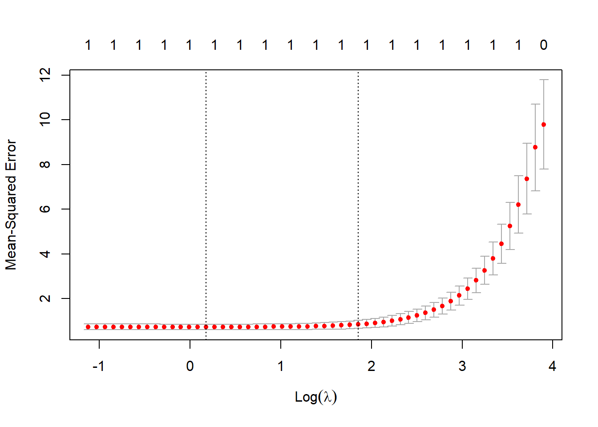
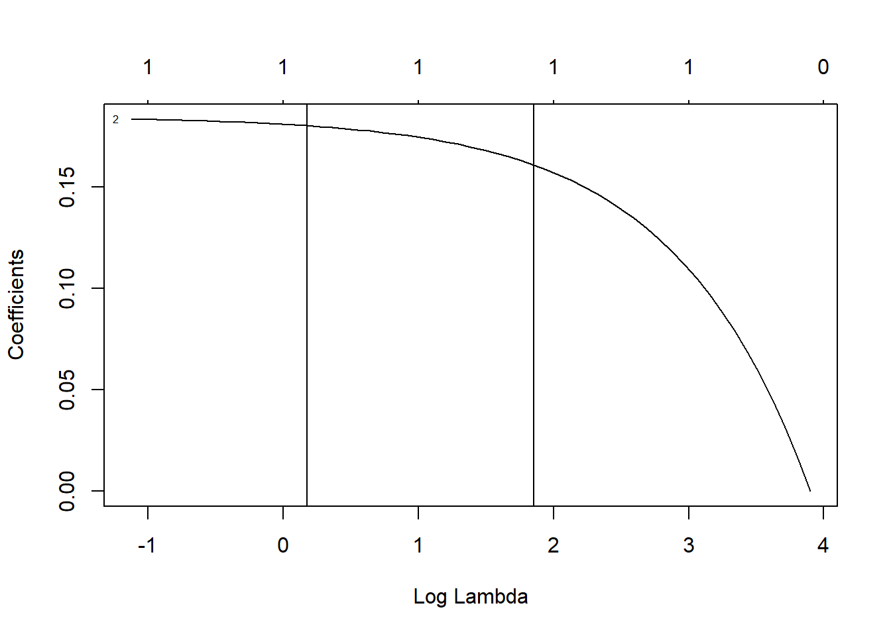

This is a short summary how to handle the curse of dimensionality in a linear model framework using R. The methods to overcome this trade-off are called Regularization or Penalization. I use \(R(.)\) to denote a regularization function, however \(P(.)\) is also often considered in the literature. These methods are also applicable to non-linear functions as for instance Poisson, Cox or logit model (logistic regression).
In general, regularization methods try to optimize the trade-off between model bias and efficiency. If we assume a linear model such as \(y =f(X) + \epsilon\), where the innovation term is standard Gaussian with variance \(\sigma^2\). Then under the assumption of linearity, full rank (non-singular matrix X), strict exogeneity, and homoscedasticity (uncorrelatedness) the Gauss-Markov Theorem suggests that the MSE estimator is a BLUE. What is more, X can be stochastic and if our assumption of normal distributed residuals hold, then our estimator has minimum variance across all unbiased estimators and is thus efficient. The decomposition of the MSE leads to three parts: \[{\mathbb E} {\Big [}{\big (}y-{\hat {f}}(X){\big )}^{2}{\Big ]} = {\Big (}\operatorname {Bias} {\big [}{\hat {f}}(X){\big ]}{\Big )}^{2}+\operatorname {Var} {\big [}{\hat {f}}(X){\big ]}\] with a bias given by \[\text{Bias} {\big [}{\hat {f}}(X){\big ]}={\mathbb E} {\big [}{\hat {f}}(X){\big ]}-f(X)\] and variance by \[\text{Var} {\big [}{\hat {f}}(X){\big ]}={\mathbb E} [{\hat {f}}(X)^{2}]-{\mathbb E} [{\hat {f}}(X)]^{2}\] However, since we are in a linear framework we can also write bias and variance in terms of the parameters itself, i.e. \[\text{Bias}[{\hat {\theta }}]={\mathbb E}[\hat{\theta}]-\theta ={\mathbb E}[\hat{\theta }-\theta]\] and \[\text{Var}[{\hat {\theta }}]={\mathbb E}[\hat{\theta^2}]-{\mathbb E}[\hat{\theta}]^2\] With increasing dimensionality of \(X\) grows the dimension of \(\theta\) and hence the variance given a very small bias. This is called the the curse of dimensionality. So large variance or inefficiency leads to over-fitting whereas a large bias leads to parameter estimates that under fit the true parameters.
We continue with the most common linear model, the MSE is the first part of our objective function but could be replaced by any other linear function \(f(.)\): \[\hat{\beta}= \min_{\hat{\beta}} \frac{1}{2n} \Vert y - X\beta \Vert^2+\lambda R(\beta) \] \(\lambda\) is often called tuning parameter and actually determines the weight at which the linear model is penalized.
The ridge regression applies the Tikhonov regularization, which is the \(l_2\) norm, i.e. \[R(w) = \frac{1}{2n}{\Vert \beta\Vert}_2^2=\frac{1}{2n}\sum_{i=1}^{n}\beta^2_i\] It controls the complexity of the model and is differentiable and thus easily optimizable.
The Lasso algorithm utilizes the \(l_1\) norm instead, i.e. \[R(w) = \frac{1}{n}{\Vert \beta\Vert}_1=\frac{1}{n}\sum_{i=1}^{n}|\beta_i|\] It also controls the comlpexity of the model but is non-differentiable around zero and thus harder to optimze. It pushes the entries towards zero and thus enforces sparsity.
Another regularizer is the \(l_{2,1}\) norm, i.e. \[R(w) = \frac{1}{n}{\Vert \beta\Vert}_{2,1}=\frac{1}{n}\sum_{g=1}^{n_g} \sqrt{ \sum_{f=1}^{n_f}\beta^2_{g,f}}\] It also controls the comlpexity of the model but the \(l_{2,1}\) norm is not squared and hence non-differentiable around zero and thus harder to optimze. It pushes the entries towards zero and thus enforces sparsity at the group level.
Transformed norms are similar as above just that regularization is applied over a linear transformation, i.e. \(w=T\beta\), which can be applied to all three regularization methods. The most common example of transformed norms is the Total Variation, which is a special family of regularizers that penalize the differences between adjacent (neighboring) entries and hence assumes spatial location. In this case \(T\) is a differentiating matrix, such that \(T_{i,i}=-1\), \(T_{i,i+1}=1\) and zero otherwise. \[R(\beta) = \frac{1}{n}{\Vert T\beta\Vert}_{1}\] Other examples for transformed norms are Graph-Based Total Variation or Trend Filtering.
Several combinations of the above mentioned methods exist as well. The most common is the Elastic-Network model, which is just the combination between Ridge and Lasso, i.e. \[R(w) = \frac{1}{n}{\Vert \beta\Vert}_1 +\frac{1}{2n}{\Vert \beta\Vert}_2^2=\frac{1}{n}\sum_{i=1}^{n}|\beta_i|+\frac{1}{2n}\sum_{i=1}^{n}\beta^2_i\] Typically, these functions are weighted independently from each other, leading to two tuning parameter \(\lambda_1\) and \(\lambda_2\).
‘Zou (2006)’ state that the standard lasso model does not have the Oracel properties. The oracle procedure ensures an optimal estimation rate and thus is more efficient. Moreover, it provides unbiased estimates. The procedure includes an adaptive weight vector \(w_i = |\hat{\beta_i}|^{-\gamma}\), where the parameter vector \(\beta\) is typically estimated by a Ridge regression. Consequently, adaptive lasso penalizes those coefficients with lower initial estimates more. The adjustment parameter \(\gamma\) is non-negaive and typically in the set {0.5, 1, 2}. \[R(w) = \frac{1}{n}{\Vert w' \beta\Vert}_1=\frac{1}{n}\sum_{i=1}^{n}w_i|\beta_i|\]
In R, several packages allow us to estimate a model applying various regularization methods. For instance, the package glmnet implements the lasso or ridge penalty for generalized linear models via penalized maximum likelihood. \[\min_{(\beta_0, \beta) \in \mathbb{R}^{p+1}}\frac{1}{2N} \sum_{i=1}^N (y_i -\beta_0-x_i^T \beta)^2+\lambda \left[ (1-\alpha)||\beta||_2^2/2 + \alpha||\beta||_1\right]\] In order to obtain the Ridge algorithm we just need to set all the weight on the \(l2\) norm, i.e. \(\alpha=0\). The cross validation glmnet function already performs n-fold cross validation to choose the best \(\lambda\).
require(glmnet, quietly = TRUE)
# load some data
x <- as.matrix(trees[, -1]) # independent variables
y <- as.double(as.matrix(trees[, 1])) # dependent variables
## Ridge Regression to create the Adaptive Weights Vector: alpha = 0
gamma <- 1
ridge <-
cv.glmnet(x,
y,
type.measure = "mse",
family = "gaussian",
standardize = TRUE,
alpha=0
)
w <- 1 / abs(matrix(coef(ridge, s = ridge$lambda.min)[, 1][2:(ncol(x) + 1)]))^gamma
w[is.infinite(w)] <- 10^12 # Replacing Infinite values
## Adaptive Lasso: alpha = 1
fit <-
cv.glmnet(
x,
y,
alpha = 1,
nfold = 10,
standardize = TRUE,
type.measure = "mse",
family = "gaussian",
penalty.factor = w
)
plot(fit)
plot(fit$glmnet.fit, xvar = "lambda", label = TRUE)
abline(v = log(fit$lambda.min))
abline(v = log(fit$lambda.1se))
coef(fit, s = fit$lambda.1se)## 3 x 1 sparse Matrix of class "dgCMatrix"
## 1
## (Intercept) 8.5444511
## Height .
## Volume 0.1559094coef <- coef(fit, s = "lambda.1se")
selected_attributes <- (coef@i[-1] + 1)
# lasso.pred <- predict(lasso.mod, s = bestlam, newx = x[test,])
# mean((lasso.pred-ytest)^2)
# plot(fit$glmnet,"lambda",ylim=c(-2,2))Zou, Hui. 2006. “The Adaptive Lasso and Its Oracle Properties.” Journal of the American Statistical Association 101 (476): 1418–29.